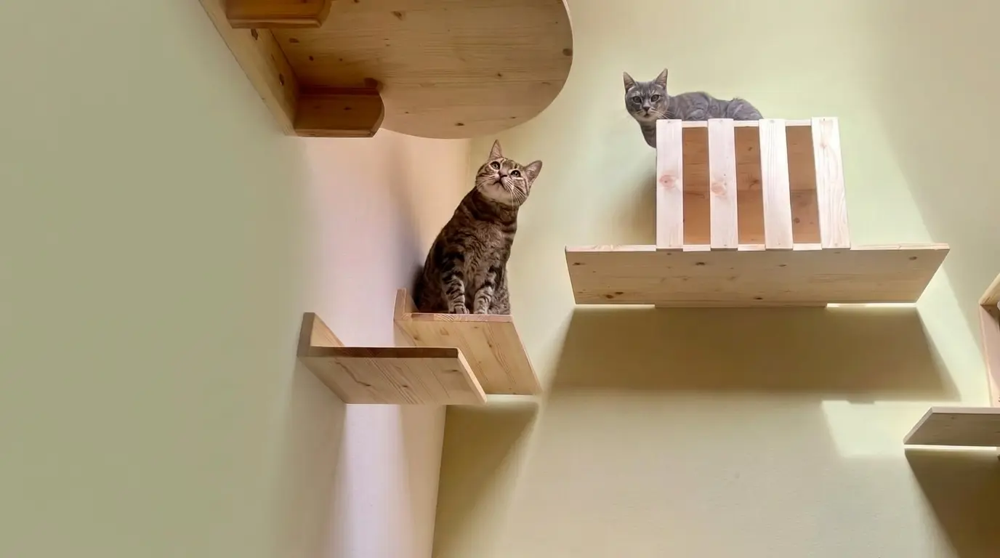

Tutto è iniziato
da due gatte diverse.
Anya e Mimì ci hanno insegnato che ogni gatto ha il proprio modo di vivere lo spazio. Da questa esperienza è nato L’Angolo dei Gatti.
Due gatte, due modi diversi di vivere la casa
Prima ancora di progettare percorsi e strutture in legno, abbiamo imparato ad osservare il loro mondo.
Con Anya abbiamo creato un percorso verticale pensato per favorire movimento, esplorazione e osservazione. La sua curiosità ci ha mostrato quanto sia importante per un gatto poter scoprire e vivere lo spazio in libertà.
Con Mimì, più prudente e sensibile ai rumori, abbiamo compreso il valore dei punti alti e protetti: luoghi dove sentirsi al sicuro, osservare ciò che accade e ritirarsi quando ne sente il bisogno.
Da due gatte è nato un modo diverso di progettare.
Anya e Mimì ci hanno mostrato due necessità diverse: il desiderio di esplorare e quello di sentirsi al sicuro. Da questa esperienza abbiamo capito che ogni gatto ha un proprio modo di vivere lo spazio.
Anya
Curiosità, movimento, esplorazione
Anya ci ha insegnato quanto sia importante per un gatto poter osservare, muoversi e vivere la casa anche in verticale.
Mimì
Sicurezza, tranquillità, protezione
Mimì ci ha mostrato il valore degli spazi più raccolti e protetti, dove un gatto può sentirsi libero di scegliere quando osservare e quando ritirarsi.
“Prima il gatto.
Poi il progetto.”
Siamo Salvo e Anna
Prima di creare spazi per altri gatti, abbiamo iniziato osservando i nostri.
Anya e Mimì ci hanno insegnato che ogni gatto ha tempi, abitudini e necessità diverse: alcuni cercano movimento e altezza, altri hanno bisogno di punti tranquilli da cui osservare e sentirsi al sicuro.
L’Angolo dei Gatti nasce da questa convinzione: creare ambienti pensati intorno al gatto, capaci di integrarsi naturalmente nella vita della casa.
Hai un’idea per il tuo gatto?
Raccontaci la sua storia e immaginiamo insieme lo spazio che potrebbe diventare.
Raccontaci il tuo progetto